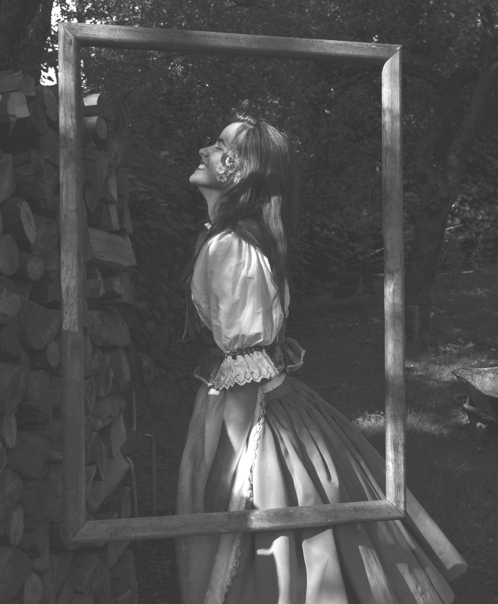

A portrait that is worth keeping blends perfectly with the inner energy, and with that emerges diversity and originality. The importance of location searching and lighting is therefore always reflected in my final outcomes. I support all that is organic and healthy for our mental wellbeing, all in order to create a portrait that stays true in portraiture photography .


